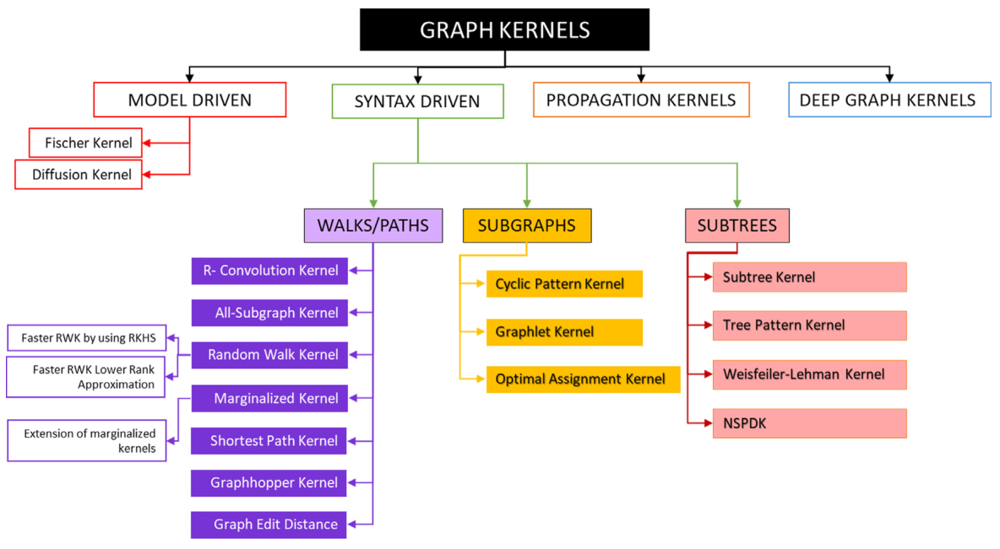
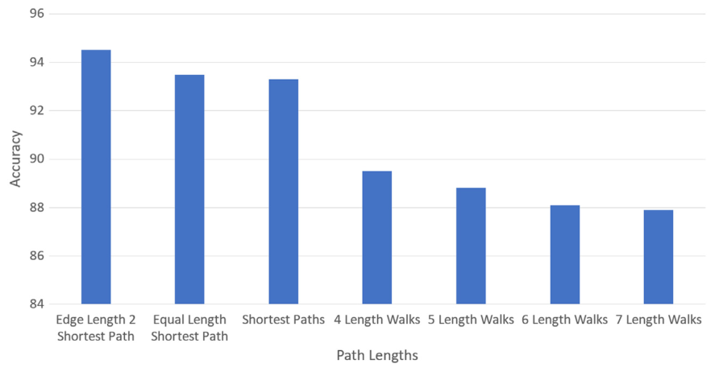

How computers learned to compare networks: a twenty-year tour of graph kernels
Molecules, social networks, web pages and parse trees are all graphs: things (nodes) joined by connections (edges). Machine learning is good at tables of numbers, and much less good at graphs. This paper is a survey. We trace graph kernels, a family of methods for comparing graphs, from their first appearance around 1998 to the techniques in use when we wrote it.
Why graphs are hard
Most learning methods boil down to asking how similar two samples are. For two lists of numbers this is easy, since you can measure the distance between them. For two graphs it is not. The obvious method is to find the parts they share. A graph with n nodes has 2ⁿ possible subgraphs, so that search explodes quickly. We quote Horst Bunke's remark that comparing objects is linear in the number of data items for feature vectors, quadratic for strings and exponential for graphs.
Checking whether two graphs are identical (graph isomorphism) has no known fast algorithm either. Even the best measures of partial overlap are costly. One classic method for finding the largest shared piece needed more than 3 hours on the hardware of its day to compare two graphs of just 24 nodes, because it works on a combined “product graph” of roughly 600 nodes.
What a kernel does
A kernel is a function that scores the similarity of two samples. It is used with the support vector machine, a classifier that separates classes with a boundary. Some data cannot be split by a straight boundary. The kernel trick maps the samples into a new space, called a Hilbert space, where closeness means similarity and the split becomes easy. The important point is that the kernel gives you that similarity without you ever building the new space by hand. A graph kernel is therefore a clever, fast way to score how alike two graphs are.
A map of the field
We sort graph kernels into a tree. Model-driven kernels use knowledge about how the data is generated. Syntax-driven kernels, the largest group, break graphs into parts such as walks and paths, small subgraphs, or tree-like patterns, and then compare those parts. Two newer groups, propagation kernels and deep graph kernels, sit alongside them.


The main ideas, in plain terms
Random walk kernels count the walks two graphs have in common, as if two walkers wandered through both graphs and we compared their trails. The first version was slow, with a cost of the order of n⁶ in the number of nodes. Later work brought it to n³ and then to n² using a low-rank approximation. Walks have a flaw we call tottering: a walker can bounce back and forth along one shared edge and push the similarity score up for no good reason.
Shortest-path kernels avoid this by comparing only shortest paths, which never revisit a node. In one experiment the survey reports, on 540 proteins from 6 enzyme classes, shortest-path variants reached roughly 93% to 94% accuracy, while walk kernels of length 4 to 7 were at roughly 88% to 90% (read off the paper's bar chart).

Graphlet kernels count small subgraphs of a fixed size and compare the two count vectors. The Weisfeiler-Lehman kernel repeatedly gives each node a new label built from the labels of its neighbours, then counts how many labels the two graphs share. Propagation kernels use the way information spreads through a graph, and cope with graphs whose labels are missing. Deep graph kernels treat small substructures like words in a sentence and learn which ones are similar, using the neural language models behind word embeddings.
Choosing a kernel, and where they are used
No kernel wins everywhere. The right one depends on the size of the graph, the type of labels, how far meaning travels across the graph, and the risk of tottering. Subgraph and subtree kernels, for example, may miss similarity when far-apart nodes matter a lot. We list uses in chemistry (predicting toxicity or drug effect from molecule graphs), protein function, social networks, the web, language parse trees and image analysis.
What this survey does not do
It does not run new experiments. The accuracy figures are taken from the original papers, which often use different datasets, so they show trends rather than a fair league table. We also did not claim a winner.
Our outlook was that graph kernels and deep learning could help each other, and that graph kernels, which are mostly matrix operations, should be able to use GPUs well.
Acknowledgements
This work is partially supported by the project entitled “Development of knowledge graph from images using deep learning”, sponsored by SERB (Government of India, order no. SB/S3/EECE/054/2016, dated 25/11/2016), and carried out at the Centre for Microprocessor Application for Training Education and Research, CSE Department, Jadavpur University.
How to cite the paper
Swarnendu Ghosh, N Das, T Gonçalves, P Quaresma, M Kundu (2018). The journey of graph kernels through two decades. Computer Science Review, Vol. 27, pp. 88–111 · Elsevier.